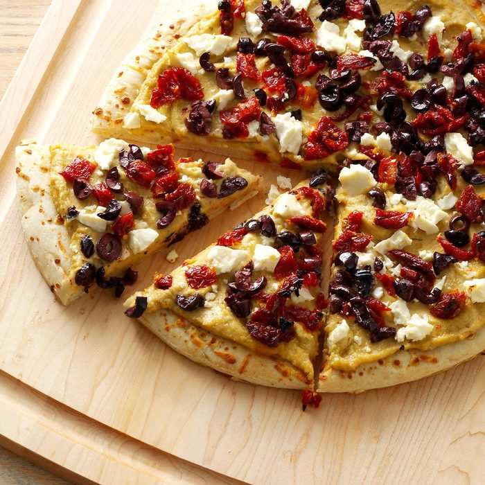

Hummus Pizza

Hummus Pizza
This pizza uses hummus instead of the usual red sauce—a unique and healthy pizza for those bored with the traditional. Top with your favorite veggies and cheese.
Ingridents
- 1 (10 ounce) can refrigerated pizza crust dough
- 1 cup hummus spread
- 1½ cups sliced bell peppers, any color
- 1 cup broccoli florets
- 2 cups shredded Monterey Jack cheese
Recipe Instructions
- Preheat the oven to 475 degrees C (220 degrees C).
- Roll out pizza crust and place on a pizza pan or baking sheet. Spread a thin layer of hummus over the crust. Arrange sliced peppers and broccoli over the hummus, and top with shredded cheese.
- Bake in the preheated oven until the crust is golden brown and cheese is melted in the center, 10 to 15 minutes. Slice and serve.
Return to top
Home